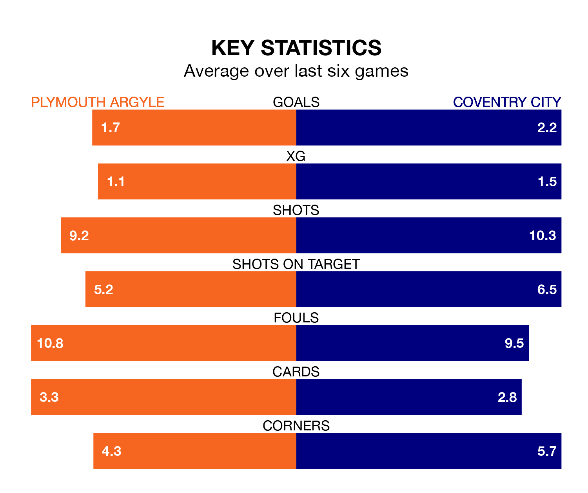

Coventry City are strong favourites to take all three points despite Plymouth Argyle's home advantage in Wednesday's late match at Home Park.
*Betting Company* are offering odds of 1.9 on Coventry sealing the win, with the visitors sitting sixth in EFL Championship table.
Plymouth, who are 15th in the league and 11 points behind the Sky Blues, are priced at 3.75 to win. A draw is set at 3.8.
With 49 goals in 30 games so far this season, Plymouth are scoring more than average in the league with 1.6 goals per game. But they are conceding more than average too, letting in 50 goals at a rate of 1.7 per game.
Coventry are also above average scorers, with 1.5 goals per game, compared to a league average of 1.4. They have conceded 1.1 goals per game.
In Morgan Whittaker, Argyle have one of the league's sharpest shooters so far this season. He has notched 16 goals in 30 appearances, to sit second in the scoring charts.
His goal rate of one every 160 minutes is quicker than that of Haji Wright, City's top scorer with a goal every 182 minutes, and a total of 10 goals in 29 games.
The Pilgrims are in mixed form in EFL Championship, with two wins and two draws from their last six games.
With four wins and a draw over that period, the Sky Blues' form is better – they have taken 13 points from 18, compared to the home side's eight.
Plymouth's last match was on Saturday, a 3-1 loss against Sunderland, with Ryan Hardie getting the goal for the Pilgrims.
Coventry beat Millwall 2-1 last time out, on Sunday, with Haji Wright on the scoresheet.
Wednesday's match will be refereed by Keith Stroud, who has taken charge of 15 EFL Championship games so far this season, issuing one red card and booking 75 players. He has awarded one penalty.
The last Coventry game Stroud refereed was the 0-0 draw at home against Sunderland on August 26. He is yet to oversee a match featuring Plymouth this season.
Updated: 13:30 (UTC), 12/02/24